Khí Tĩnh Mạch Cửa
I. Đại cương
– Khí tĩnh mạch cửa (portal venous gas) là sự tích tụ bất thường của khí bên trong hệ thống tĩnh mạch cửa và các nhánh trong gan:
+ Không phải một thực thể bệnh lý độc lập mà là dấu hiệu hình ảnh thứ phát cảnh báo nhiều tình trạng cấp cứu ổ bụng hoặc biến chứng thủ thuật.
+ Dấu hiệu này được Wolf và Evans mô tả lần đầu tiên trên X-quang bụng ở trẻ sơ sinh bị viêm ruột hoại tử vào năm 1955.
– Dịch tễ: Tỷ lệ phát hiện trên lâm sàng ngày càng gia tăng nhờ sự phổ biến và độ phân giải cao của cắt lớp vi tính đa dãy:
+ Gặp ở cả trẻ sơ sinh (chủ yếu liên quan viêm ruột hoại tử) và người lớn (thường liên quan thiếu máu mạc treo cấp, tắc ruột hoặc sau can thiệp).
+ Tỷ lệ tử vong chung đã giảm từ > 75% trong các báo cáo X-quang kinh điển xuống khoảng 25–40% hiện nay nhờ phát hiện sớm nhiều trường hợp lành tính hoặc thoáng qua trên cắt lớp vi tính.
– Căn nguyên: Phân bố nguyên nhân phản ánh phổ bệnh lý từ cấp cứu hoại tử đến các tình trạng giãn lòng ruột hoặc sau thủ thuật lành tính:
+ Nhóm thiếu máu và hoại tử ruột chiếm tỷ lệ hàng đầu (khoảng 43% trong tổng quan kinh điển và dao động 33–53% trong các loạt nghiên cứu cắt lớp vi tính đa trung tâm), chủ yếu do thiếu máu mạc treo cấp tính hoặc xoắn nghẹt ruột.
+ Nhóm giãn lòng ống tiêu hóa do tắc ruột cơ học hoặc liệt ruột (khoảng 12%) làm tăng áp lực nội lòng đột ngột.
+ Nhóm nhiễm trùng và áp xe trong ổ bụng (khoảng 11%) như viêm túi thừa, viêm ruột thừa thủng, viêm phúc mạc hoặc viêm đường mật sinh mủ.
+ Nhóm bệnh lý viêm loét niêm mạc ống tiêu hóa gồm viêm loét đại tràng (khoảng 4%), loét dạ dày – tá tràng (khoảng 4%) và bệnh Crohn (khoảng 4%).
+ Nhóm liên quan thủ thuật y khoa (khoảng 4% trong thống kê kinh điển và có xu hướng tăng lên rõ rệt trong thực hành cắt lớp vi tính hiện đại) như nội soi tiêu hóa, nong thực quản, sinh thiết hoặc sau phẫu thuật bụng.
+ Nhóm u ác tính ổ bụng (khoảng 3%) và các nguyên nhân khác hoặc vô căn (khoảng 15%) như viêm ruột hoại tử sơ sinh, chấn thương bụng kín.
– Cơ chế bệnh sinh: Sự xâm nhập khí vào hệ tĩnh mạch mạc treo – cửa hình thành qua ba cơ chế chính thường phối hợp nhau:
+ Tổn thương hàng rào niêm mạc ruột do thiếu máu, hoại tử hoặc viêm loét tạo lối vào trực tiếp cho khí từ lòng ruột xuyên qua thành tĩnh mạch tạng.
+ Tăng áp lực trong lòng ống tiêu hóa do tắc nghẽn hoặc thủ thuật bơm hơi đẩy khí qua lớp niêm mạc bị tổn thương hoặc thậm chí còn nguyên vẹn vào tĩnh mạch thành ruột.
+ Sự sinh hơi tại chỗ của vi khuẩn kỵ khí xâm nhập vào hệ tĩnh mạch mạc treo hoặc từ các ổ áp xe trong ổ bụng dẫn lưu về hệ cửa.
+ Các bọt khí theo dòng chảy hướng gan (hepatopetal) của hệ tĩnh mạch cửa di chuyển ra tận các nhánh tận ngoại vi sát bao gan.
– Biểu hiện lâm sàng: Triệu chứng không đặc hiệu và phụ thuộc hoàn toàn vào bệnh lý nền gây ra khí tĩnh mạch cửa:
+ Bối cảnh cấp cứu ngoại khoa biểu hiện bằng đau bụng dữ dội, chướng bụng, phản ứng thành bụng, nôn ói, đi ngoài ra máu hoặc sốc nhiễm trùng – nhiễm độc.
+ Bối cảnh lành tính hoặc sau thủ thuật có thể chỉ đau bụng nhẹ thoáng qua hoặc hoàn toàn không triệu chứng, tình cờ phát hiện trên chẩn đoán hình ảnh.
– Phân bố: Vị trí tích tụ khí phản ánh nguồn gốc giải phẫu của tổn thương và đặc điểm huyết động hệ cửa:
+ Trong nhu mô gan, khí ưu tiên tập trung ở ngoại vi (cách bao gan < 2 cm) và thường nổi trội ở thùy trái do vị trí giải phẫu nằm phía trước trên khi bệnh nhân nằm ngửa.
+ Trường hợp khí số lượng lớn có thể lấp đầy cả thân chính tĩnh mạch cửa, tĩnh mạch mạc treo tràng trên, tĩnh mạch mạc treo tràng dưới hoặc tĩnh mạch lách.
– Vai trò CĐHA: Cắt lớp vi tính giữ vai trò hàng đầu trong chẩn đoán xác định và định hướng thái độ xử trí:
+ Phát hiện nhạy các bọt khí nhỏ trong hệ tĩnh mạch cửa – mạc treo ngay cả khi X-quang bụng không chuẩn bị âm tính.
+ Xác định nguyên nhân nền và đánh giá mức độ tổn thương ruột phối hợp (khí thành ruột, giảm ngấm thuốc thành ruột, huyết khối mạch mạc treo, khí tự do ổ bụng) để phân tầng chỉ định phẫu thuật cấp cứu hay theo dõi bảo tồn.

© Chẩn Đoán Hình Ảnh Xray.vn
II. Giải phẫu
– Cấu trúc hợp lưu và đường đi: Thân chính tĩnh mạch cửa được hình thành phía sau cổ tụy (ngang mức đốt sống L1–L2) bởi sự hợp lưu của tĩnh mạch mạc treo tràng trên và tĩnh mạch lách; chạy chếch lên trên, sang phải trong bờ tự do của mạc nối nhỏ (dây chằng gan – tá tràng), nằm phía sau động mạch gan riêng và ống mật chủ trước khi chia nhánh tại rốn gan.
– Phân nhánh trong gan: Tại rốn gan, thân chính chia thành nhánh phải và nhánh trái đi kèm các nhánh tương ứng của động mạch gan và đường mật trong bao Glisson:
+ Nhánh phải tĩnh mạch cửa: Ngắn và lớn hơn, chia tiếp thành nhánh phân thùy trước (cấp máu cho hạ phân thùy V, VIII) và nhánh phân thùy sau (cấp máu cho hạ phân thùy VI, VII).
+ Nhánh trái tĩnh mạch cửa: Dài hơn và chạy ngang sang trái, gồm đoạn ngang và đoạn rốn, cấp máu cho thùy trái (hạ phân thùy II, III, IV) và cho các nhánh nhỏ vào thùy đuôi (hạ phân thùy I).
– Kích thước và huyết động bình thường: Khẩu kính thân chính đo trên siêu âm ở tư thế nhịn đói thường ≤ 13 mm; cung cấp khoảng 75–80% tổng lưu lượng máu và khoảng 50% lượng oxy cho nhu mô gan với dòng chảy hướng gan (hepatopetal), vận tốc trung bình 15–20 cm/s và phổ Doppler ít dao động theo nhịp thở hoặc nhịp tim.
– Biến thể giải phẫu thường gặp: Chiếm khoảng 20–35% dân số và có ý nghĩa quyết định trong lập kế hoạch phẫu thuật cắt gan hoặc can thiệp nội mạch:
+ Chạc ba tĩnh mạch cửa (trifurcation): Thân chính chia đồng thời thành ba nhánh gồm nhánh phân thùy trước phải, nhánh phân thùy sau phải và nhánh trái (chiếm khoảng 10–15%).
+ Nhánh phân thùy sau phải xuất phát sớm từ thân chính (early origin of right posterior portal vein): Nhánh phân thùy sau phải tách trực tiếp từ thân chính trước khi chia nhánh trái và nhánh phân thùy trước phải (chiếm khoảng 5–10%).
+ Nhánh phân thùy trước phải xuất phát từ nhánh trái tĩnh mạch cửa: Dễ gây tổn thương hoặc thắt nhầm nhánh cấp máu cho gan phải khi phẫu thuật cắt gan trái nếu không nhận diện trước mổ.
– Hệ thống tuần hoàn bàng hệ cửa – chủ: Tĩnh mạch cửa không có van nên khi tăng áp lực hoặc tắc nghẽn, dòng máu đảo chiều qua các vòng nối giải phẫu chính gồm vòng nối thực quản – dạ dày (qua tĩnh mạch vị trái và tĩnh mạch vị ngắn), vòng nối rốn (tái thông tĩnh mạch cạnh rốn trong dây chằng tròn), vòng nối trực tràng (tĩnh mạch trực tràng trên – giữa/dưới) và vòng nối sau phúc mạc (tĩnh mạch lách – thận trái).
III. Chẩn đoán siêu âm
– Kỹ thuật khảo sát: Siêu âm thang xám kết hợp Doppler giúp phát hiện trực tiếp các bọt khí di động theo thời gian thực ngay tại giường bệnh:
+ Sử dụng đầu dò cong tần số thấp (2–5 MHz) đánh giá tổng thể hệ tĩnh mạch cửa – mạc treo và đầu dò thẳng tần số cao (7–12 MHz) để phát hiện rõ các vi bọt khí ở vùng ngoại vi sát bao gan.
+ Hạ mức khuếch đại tổng thể (gain) giúp tăng độ tương phản giữa các bọt khí hồi âm dày với lòng mạch giảm âm chứa máu lưu thông.
– Đặc điểm hình ảnh: Các bọt khí trong hệ tĩnh mạch mạc treo – cửa biểu hiện bằng hình thái tăng hồi âm điển hình và tính chất di động theo dòng chảy:
+ Trong lòng tĩnh mạch mạc treo tràng trên, tĩnh mạch mạc treo tràng dưới, tĩnh mạch lách và thân chính tĩnh mạch cửa, khí xuất hiện dưới dạng các chấm hoặc đốm tăng hồi âm mạnh trôi tự do về phía rốn gan.
+ Khác với sỏi hoặc huyết khối vôi hóa cố định bám thành mạch, các chấm tăng hồi âm này di chuyển liên tục theo nhịp dòng chảy hướng gan (hepatopetal) trên siêu âm thời gian thực.
+ Trên siêu âm Doppler xung, các bọt khí đi qua cửa sổ khảo sát tạo ra các vạch nhiễu tín hiệu thẳng đứng hai chiều sắc nhọn kèm tiếng lách tách đặc trưng trên phổ âm thanh.
– Đặc điểm hình ảnh trong nhu mô gan: Các bọt khí theo dòng máu tĩnh mạch cửa vào gan phân bố dưới dạng các dải hoặc đường tăng hồi âm mạnh phân nhánh dạng cành cây ở vùng ngoại vi:
+ Bọt khí di chuyển theo dòng chảy hướng gan (hepatopetal) ra tận các nhánh tận ngoại vi sát bao gan (< 2 cm), ưu thế ở phần trước thùy trái khi bệnh nhân nằm ngửa.
+ Phía sau các ổ khí tạo giả ảnh phản xạ nhiều lần dạng đuôi sao chổi (comet-tail artifact) hoặc bóng cản bẩn, cần tránh nhầm với nốt vôi hóa nhu mô gan hay sỏi đường mật trong gan.
+ Dấu hiệu phân biệt với khí đường mật (pneumobilia) dựa vào vị trí phân bố: khí tĩnh mạch cửa lan tỏa ra sát ngoại vi bao gan theo chiều dòng máu cửa, trong khi khí đường mật tập trung ở trung tâm rốn gan do dòng chảy mật hướng tâm.
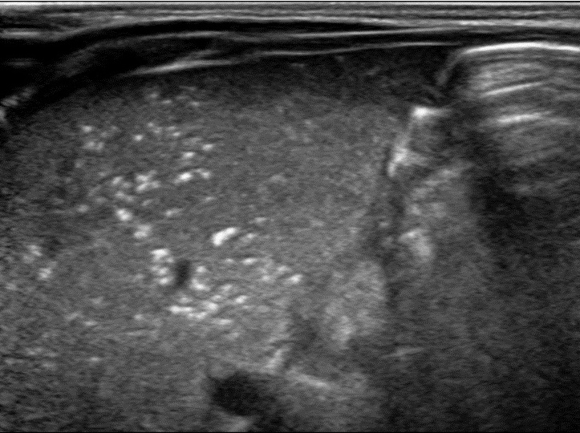
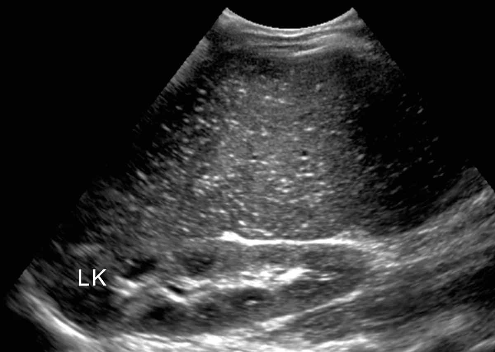
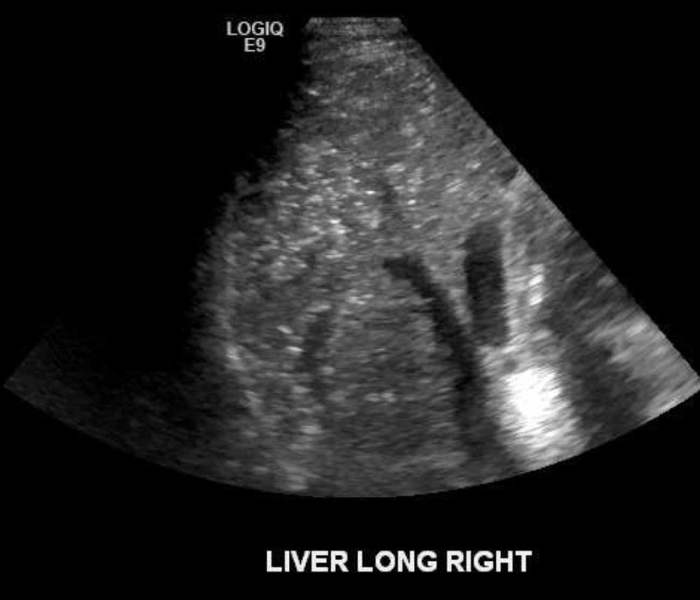
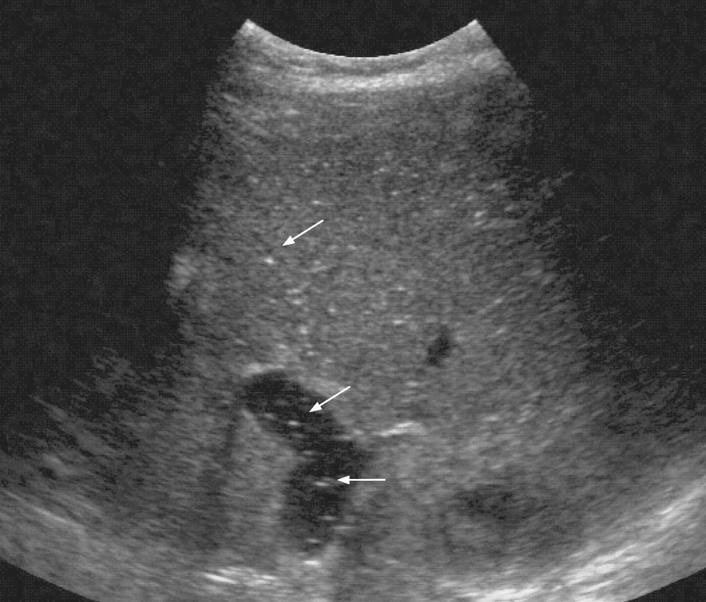
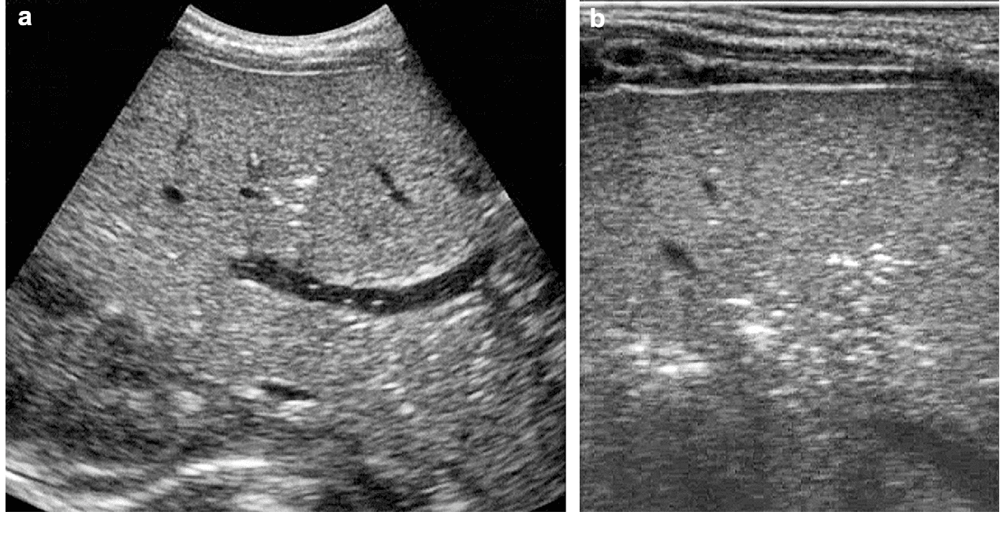
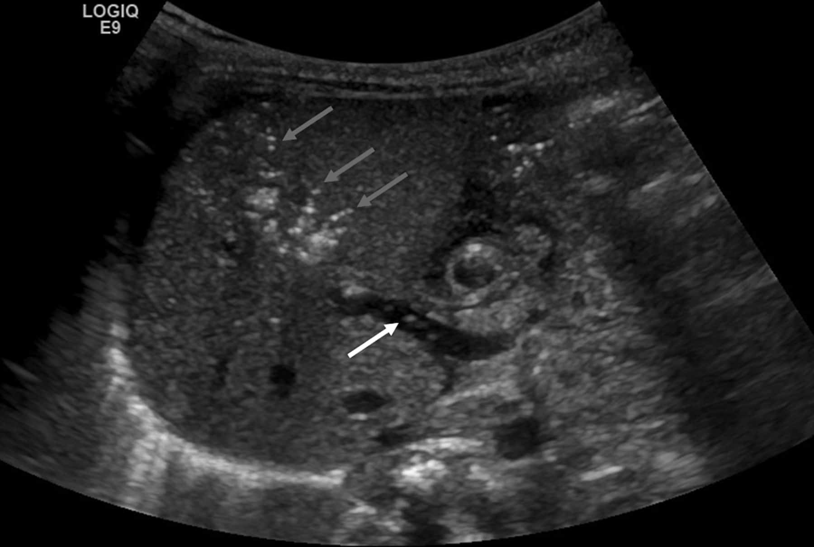
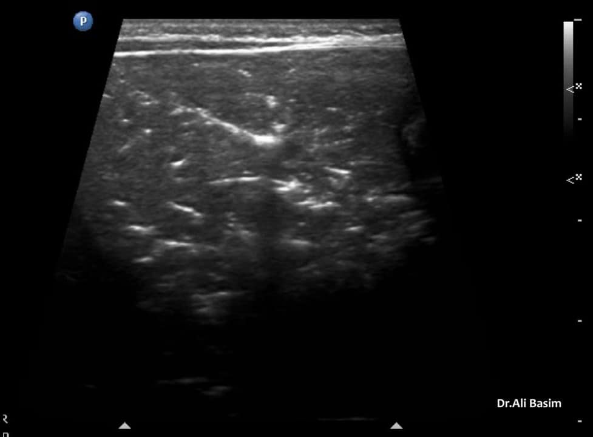
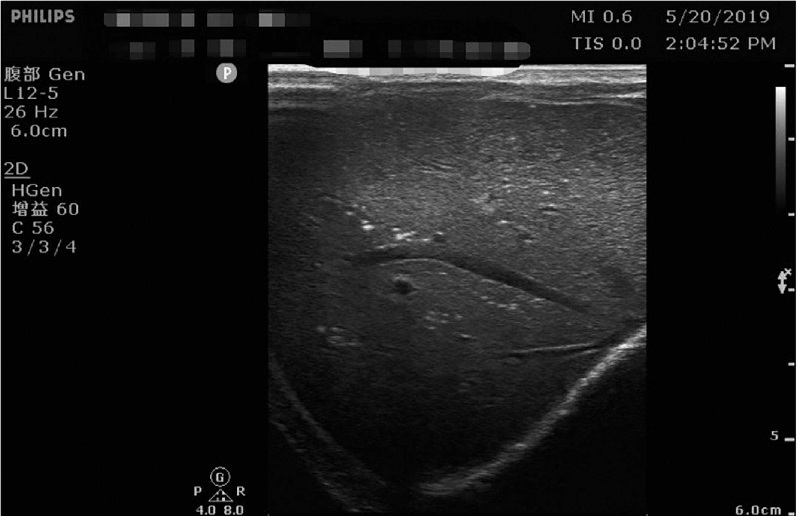
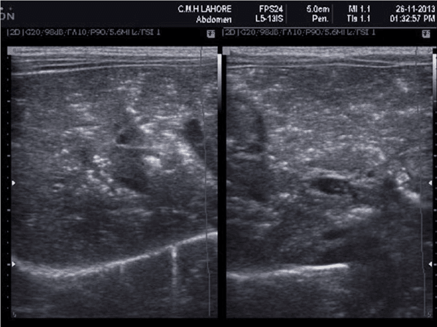
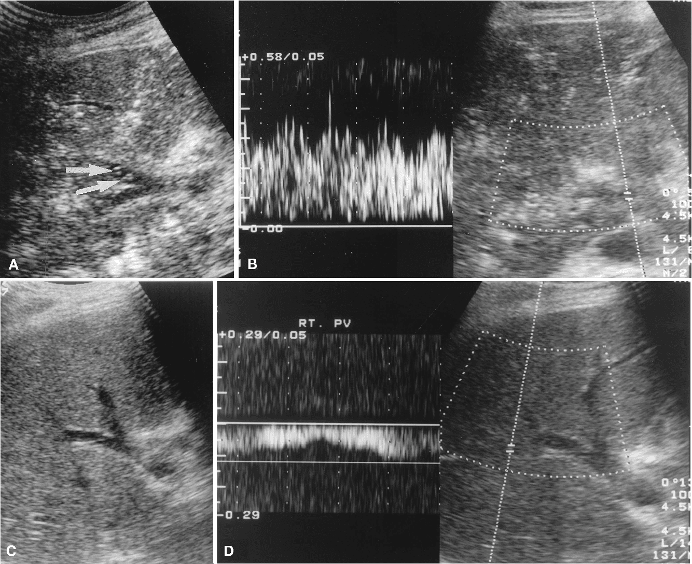
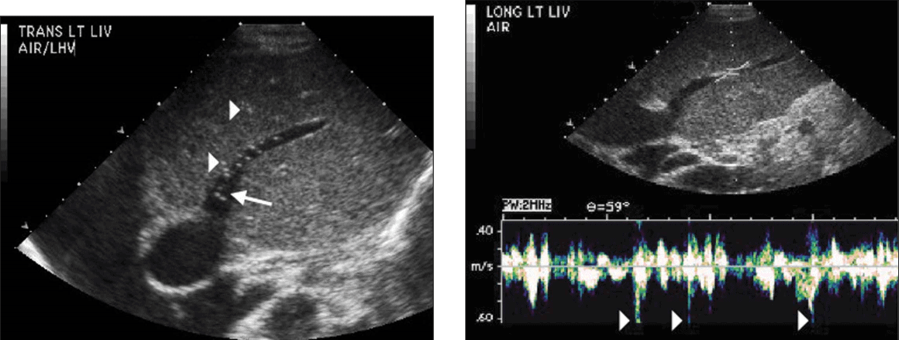
=> Case lâm sàng 1:
IV. Chẩn đoán x-quang
– Kỹ thuật chụp: Phim X-quang bụng không chuẩn bị tư thế nằm ngửa hoặc tư thế nằm nghiêng trái (left lateral decubitus) giúp quan sát rõ vùng gan:
+ Tư thế nằm nghiêng trái làm khí nổi lên trên theo trọng lực, tập trung ở phần cao của thùy phải gan sát vòm hoành để dễ nhận diện và tránh chồng hình với hơi trong đại tràng.
– Đặc điểm hình ảnh: Khí trong hệ tĩnh mạch cửa biểu hiện bằng các dải sáng phân nhánh dạng cành cây (arborizing lucencies) chồng lên bóng mờ gan:
+ Khí có xu hướng lan tỏa ra tận vùng ngoại vi nhu mô gan (cách bao gan < 2 cm) do dòng chảy tĩnh mạch cửa hướng gan (hepatopetal) đẩy các bọt khí tới các nhánh tận nhỏ.
+ Khi lượng khí tích tụ lớn, các dải sáng dạng ống có thể lan ngược về thân chính tĩnh mạch cửa tại rốn gan, tĩnh mạch mạc treo tràng trên hoặc tĩnh mạch lách.
+ Độ nhạy của X-quang bụng thấp (chỉ phát hiện được khoảng 15–20% số trường hợp có khí tĩnh mạch cửa trên cắt lớp vi tính), nên phim âm tính không loại trừ được chẩn đoán và dấu hiệu này thường phản ánh giai đoạn muộn với khối lượng khí lớn.


– Tổn thương phối hợp: Phim X-quang bụng có thể bộc lộ các dấu hiệu đi kèm giúp định hướng nguyên nhân nền và cảnh báo tình trạng thiếu máu hoại tử ruột:
+ Tắc ruột cơ học hoặc liệt ruột biểu hiện bằng các quai ruột non hoặc đại tràng giãn chướng hơi kèm mức nước – hơi trên phim chụp tư thế đứng hoặc nằm nghiêng.
+ Khí thành ruột (pneumatosis intestinalis) xuất hiện dưới dạng các dải sáng chạy dọc song song thành quai ruột hoặc các bóng khí tròn nhỏ dạng chùm nho xếp lớp trong thành ruột.
+ Khí trong hệ tĩnh mạch mạc treo biểu hiện bằng các dải sáng phân nhánh nhỏ nằm ở vùng trung tâm ổ bụng hướng về phía tĩnh mạch cửa, thường khó tách biệt với hơi trong lòng ruột trên phim thường quy.
+ Liềm hơi dưới vòm hoành (pneumoperitoneum) báo hiệu biến chứng thủng tạng rỗng thứ phát sau hoại tử xuyên thành, đòi hỏi chỉ định phẫu thuật cấp cứu tức thì.


=> Case lâm sàng 1:
– Phân biệt: Đối chiếu trực tiếp với các dải sáng dạng khí khác chồng lên vùng gan trên phim X-quang bụng không chuẩn bị:
+ Khí đường mật trong gan (pneumobilia): Khí tập trung ở vùng trung tâm quanh rốn gan và dừng lại cách xa bao gan (> 2 cm) do dòng chảy dịch mật hướng tâm ra rốn gan đẩy bọt khí về các ống mật lớn.
+ Khí tĩnh mạch cửa (portal venous gas): Khí phân nhánh nhỏ mịn lan tỏa ra tận vùng ngoại vi sát bao gan (< 2 cm) theo dòng chảy hướng gan (hepatopetal), thường kèm khí trong hệ tĩnh mạch mạc treo hoặc khí thành ruột.
+ Khí trong ổ áp xe gan hoặc nhồi máu gan sinh hơi: Tạo ổ sáng khu trú dạng bọt xà phòng hoặc mức khí – dịch cố định trong nhu mô gan, không phân nhánh liên tục theo cây mạch máu hay đường mật.


V. Chẩn đoán CLVT
– Kỹ thuật khảo sát: Cắt lớp vi tính bụng – chậu đa dãy đầu thu (MDCT) tiêm thuốc cản quang tĩnh mạch đa thì là phương tiện tiêu chuẩn vàng để phát hiện khí tĩnh mạch cửa và tìm căn nguyên:
+ Chụp đủ ba thì gồm thì không tiêm thuốc cản quang (nhận diện khí nhỏ, vôi hóa thành mạch và xuất huyết trong thành ruột), thì động mạch (đánh giá tắc nghẽn động mạch mạc treo tràng trên/dưới) và thì tĩnh mạch cửa (đánh giá độ ngấm thuốc thành ruột và huyết khối hệ tĩnh mạch cửa – mạc treo).
+ Thay đổi độ rộng cửa sổ sang cửa sổ phổi hoặc cửa sổ gan mở rộng giúp phân biệt rõ các ổ khí đậm độ âm sâu (-1000 HU đến -200 HU) với mô mỡ quanh mạch máu.
– Đặc điểm hình ảnh: Khí trong hệ tĩnh mạch cửa biểu hiện bằng các cấu trúc giảm đậm độ âm sâu dạng ống phân nhánh theo cây mạch cửa:
+ Khí tạo hình ảnh các nhánh giảm đậm độ dạng cành cây chạy song hành với các nhánh động mạch gan trong khoảng cửa, đi xa khỏi rốn gan và lan tỏa ra tận vùng ngoại vi nhu mô gan (cách bao gan < 2 cm) do dòng chảy tĩnh mạch cửa hướng gan (hepatopetal).
+ Khi lượng khí ít, các bọt khí thường nổi lên và tập trung ưu thế ở vùng trước trên của gan trái (hạ phân thùy II, III, IV) theo tác động của trọng lực ở tư thế bệnh nhân nằm ngửa.
+ Trường hợp khí số lượng lớn có thể lấp đầy thân chính tĩnh mạch cửa tại rốn gan, tĩnh mạch lách, tĩnh mạch mạc treo tràng trên hoặc tĩnh mạch mạc treo tràng dưới.


– Tổn thương phối hợp: Cắt lớp vi tính đa thì phát hiện chính xác các dấu hiệu đi kèm giúp xác định căn nguyên và phân tầng mức độ nặng của tổn thương ống tiêu hóa:
+ Khí trong hệ tĩnh mạch mạc treo (portomesenteric venous gas): Các ổ hoặc dải khí chạy dọc theo nhánh tĩnh mạch mạc treo tràng trên, tĩnh mạch mạc treo tràng dưới hoặc tĩnh mạch lách hướng về rốn gan, giúp định vị trực tiếp đoạn ống tiêu hóa bị tổn thương.
+ Khí thành ruột (pneumatosis intestinalis): Hình thái dải khí chạy dọc chu vi thành ruột (linear pneumatosis) gợi ý mạnh thiếu máu hoại tử ruột khi đi kèm khí tĩnh mạch cửa, trong khi dạng nang tròn nhỏ (cystic pneumatosis) thường gặp trong bệnh lý lành tính.
+ Bất thường tưới máu và thành ruột: Thành ruột dày phù nề hình bia bắn (tăng sinh mạch phản ứng) hoặc thành ruột mỏng như giấy kèm giảm hoặc không ngấm thuốc cản quang thì tĩnh mạch cửa (dấu hiệu đặc hiệu của hoại tử ruột xuyên thành).
+ Tắc nghẽn mạch máu mạc treo và biến chứng ổ bụng: Huyết khối lấp đầy lòng động mạch hoặc tĩnh mạch mạc treo trên thì mạch máu, dịch tự do ổ bụng và khí tự do trong khoang phúc mạc (pneumoperitoneum) báo hiệu biến chứng thủng ruột cần phẫu thuật cấp cứu.


=> Case lâm sàng 1:


=> Case lâm sàng 2:


=> Case lâm sàng 3:


=> Case lâm sàng 4:


* Phân biệt khí đường mật
– Khí đường mật trong gan (pneumobilia): Khí tập trung ưu thế ở vùng trung tâm rốn gan và thùy trái, dừng lại cách xa bao gan (> 2 cm) do dòng chảy dịch mật hướng tâm ra rốn gan đẩy bọt khí về các ống mật lớn:
+ Trên cắt lớp vi tính, các nhánh khí nằm ở trung tâm khoảng cửa (vị trí ống mật) và thường đi kèm tiền sử nối mật – ruột, cắt cơ vòng Oddi, đặt stent đường mật hoặc sỏi rò mật – ruột.
+ Không đi kèm khí trong hệ tĩnh mạch mạc treo hay khí thành ruột thiếu máu.
– Khí tĩnh mạch cửa (portal venous gas): Khí phân nhánh nhỏ mịn lan tỏa ra tận vùng ngoại vi nhu mô gan (cách bao gan < 2 cm) do dòng chảy tĩnh mạch cửa hướng gan (hepatopetal) đẩy khí tới các nhánh tận ngoại vi:
+ Thường đi kèm khí trong tĩnh mạch mạc treo tràng trên/dưới, khí thành ruột hoặc dấu hiệu thiếu máu hoại tử ống tiêu hóa trên cùng lần chụp cắt lớp vi tính.
+ Trường hợp khí số lượng lớn có thể lan ngược về thân chính tĩnh mạch cửa tại rốn gan nhưng vẫn duy trì phân bố ngoại vi đặc trưng.
– Cạm bẫy phân biệt trên cắt lớp vi tính: Khi lượng khí tĩnh mạch cửa quá nhiều làm lấp đầy cả thân chính tại rốn gan hoặc khi khí đường mật lan rộng trong trường hợp tắc nghẽn đường mật sinh hơi, cần đối chiếu đồng thời sự hiện diện của khí tĩnh mạch mạc treo, tiền sử can thiệp đường mật và vị trí nhánh tận cách bao gan (< 2 cm hay > 2 cm) để tránh chẩn đoán nhầm.

VI. Tiên lượng & Điều trị
* Tiên lượng
– Diễn tiến tự nhiên và yếu tố tiên lượng: Bản thân khí tĩnh mạch cửa không tự quyết định tiên lượng mà phụ thuộc trực tiếp vào bệnh lý nền gây ra nó, bám sát hướng dẫn của Hiệp hội Phẫu thuật Cấp cứu Thế giới (WSES, 2022) về quản lý thiếu máu mạc treo cấp:
+ Tỷ lệ tử vong cao nhất (55–75%) gặp ở nhóm có thiếu máu và hoại tử ruột xuyên thành, tăng vọt khi có đồng thời khí thành ruột dạng dải, huyết khối mạch mạc treo hoặc toan chuyển hóa nặng.
+ Tiên lượng tốt (tỷ lệ sống > 90%) ở nhóm nguyên nhân lành tính hoặc thoáng qua như sau nội soi tiêu hóa, thủ thuật can thiệp đường mật, giãn ống tiêu hóa đơn thuần không thiếu máu hoặc viêm ruột nhẹ.
+ Trên hình ảnh, sự phối hợp của ba dấu hiệu gồm khí tĩnh mạch cửa, khí thành ruột và giảm ngấm thuốc thành ruột là yếu tố dự báo mạnh nhất của hoại tử ruột không hồi phục.
* Nguyên tắc điều trị
– Chiến lược phân tầng xử trí: Quyết định phẫu thuật cấp cứu hay điều trị bảo tồn dựa trên sự kết hợp giữa lâm sàng, xét nghiệm (lactate máu, tình trạng toan chuyển hóa) và dấu hiệu tổn thương ruột trên cắt lớp vi tính theo khuyến cáo của WSES (2022):
+ Chỉ định phẫu thuật mở bụng thăm dò cấp cứu ngay khi có dấu hiệu viêm phúc mạc, sốc nhiễm trùng, khí tự do ổ bụng, tắc nghẽn động mạch mạc treo cấp tính hoặc dấu hiệu hoại tử thành ruột trên cắt lớp vi tính.
+ Chỉ định điều trị bảo tồn (nhịn ăn, đặt ống thông dạ dày giảm áp, bù dịch – điện giải, kháng sinh phổ rộng) cho các trường hợp lâm sàng ổn định, không có bằng chứng thiếu máu ruột hoặc thủng tạng rỗng (thường gặp sau thủ thuật nội soi, liệt ruột cơ năng hoặc viêm dạ dày – ruột cấp).
+ Can thiệp nội mạch tái thông mạch mạc treo được cân nhắc tại các trung tâm chuyên sâu ở giai đoạn thiếu máu sớm trước khi xuất hiện hoại tử ruột xuyên thành hoặc viêm phúc mạc.
* Vai trò CĐHA
– Đánh giá phân tầng và theo dõi diễn tiến: Chẩn đoán hình ảnh giữ vai trò cốt lõi trong việc tránh phẫu thuật không cần thiết cho nhóm lành tính và không bỏ sót chỉ định mổ cấp cứu ở nhóm hoại tử ruột:
+ Trước can thiệp, cắt lớp vi tính đa thì xác định chính xác vị trí tắc nghẽn mạch máu, chiều dài đoạn ruột thiếu máu và phân tầng nguy cơ hoại tử để định hướng đường mổ hoặc can thiệp nội mạch.
+ Ở nhóm điều trị bảo tồn, chụp cắt lớp vi tính kiểm tra sau 24–48 giờ (hoặc siêu âm theo dõi tại giường) giúp đánh giá mức độ thoái triển của khí tĩnh mạch cửa và phát hiện sớm tình trạng tiến triển thành thiếu máu ruột muộn.
+ Sau phẫu thuật cắt đoạn ruột hoại tử hoặc tái thông mạch, cắt lớp vi tính giúp theo dõi tình trạng tưới máu miệng nối, tái phát huyết khối và các biến chứng áp xe tồn dư trong ổ bụng.
Tài liệu tham khảo
* Portomesenteric Vein Gas: Pathologic Mechanisms, CT Findings, and Prognosis – Carmen Sebastià, MD, Sergi Quiroga, MD, Eloy Espin, MD
* CT Diagnosis of Acute Mesenteric Ischemia from Various Causes – Akira Furukawa, Shuzo Kanasaki, Naoaki Kono
* Chronic Mesenteric Ischemia: Imaging and Percutaneous Treatment – François Cognet, MD, Douraied Ben Salem, MD, Marie Dranssart, MD
* Multi–Detector Row CT of Mesenteric Ischemia: Can It Be Done? – Karen M. Horton, MD, and Elliot K. Fishman, MD
* Bowel wall thickening – CT-pattern – Richard Gore and Robin Smithuis
* Pneumatosis Intestinalis: when to worry? – F. Rego Costa, C. Maciel, C. Esteves, L. Melão
* CT of Bowel Wall Thickening: A Diagnostic Approach in Patients with Acute Abdominal Pain – J. Abreu e Silva, C. Fernandes
* The role of contrast enhanced CT and regular vessels analysis in detection of unsuspected mesenteric vein thrombosis – S. Jovanoska, S. Jakimovska, A. Lazarevska